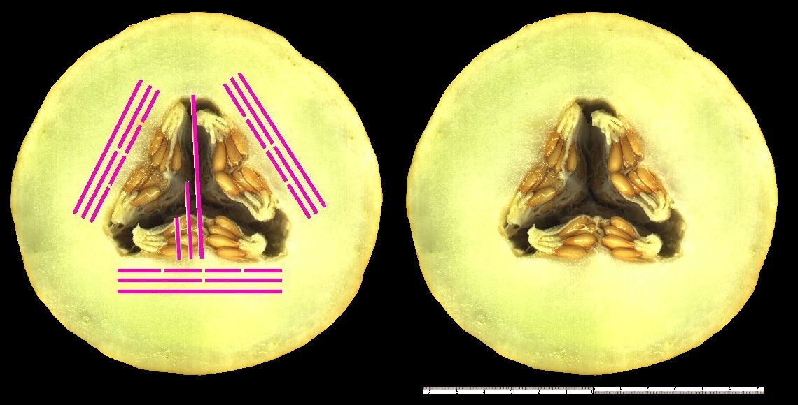
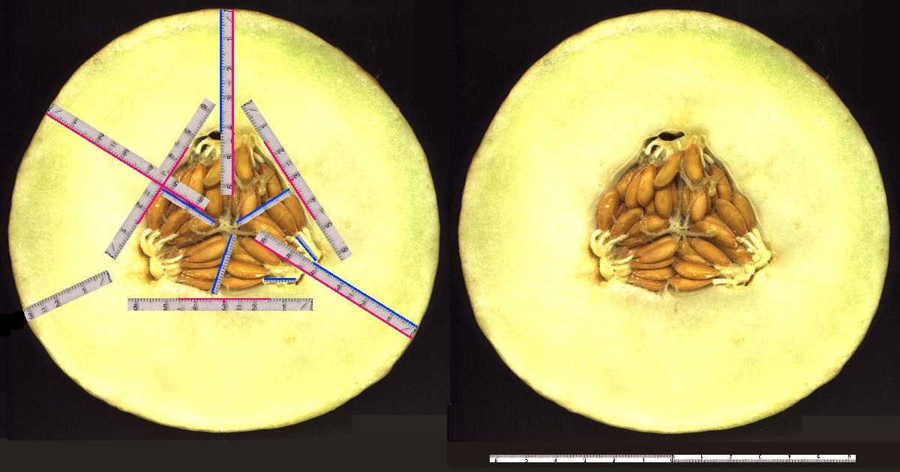
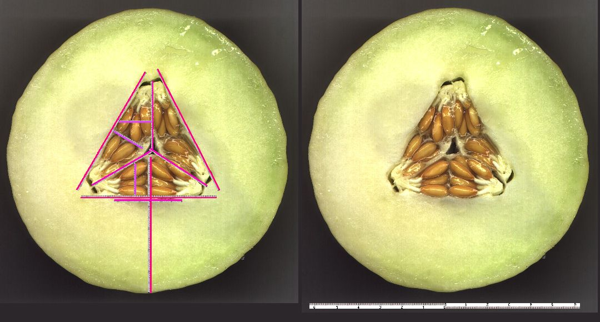
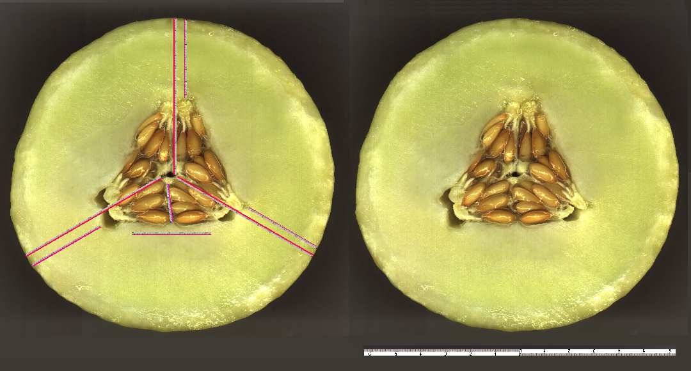
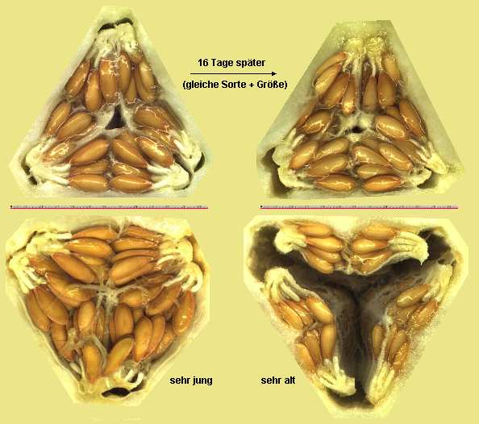

|
Schema der Kohlenstoff-Resonanz einer Honigmelone
bei Wasserverlust
Die Samenkerne ziehen sich in den innersten
kleinen Resonanzraum zurück.

mehr zu dieser Melone rechtes
Bild in groß
Kohlenwasserstoff-Resonanz einer
frischen Honigmelone

linkes Bild in groß rechtes
Bild in groß
Honigmelone (Spanien), die angefangen
hat, einzutrocken/reif zu werden

linkes Bild in groß rechtes
Bild in groß
Honigmelone (Spanien), aus der
gleichen Lieferung und Größe, 16 Tage später

linkes Bild in groß rechtes
Bild in groß
Stuktur-Vergleich dieser 4 Honigmelonen

Bild größer
Zur Galiamelone
|